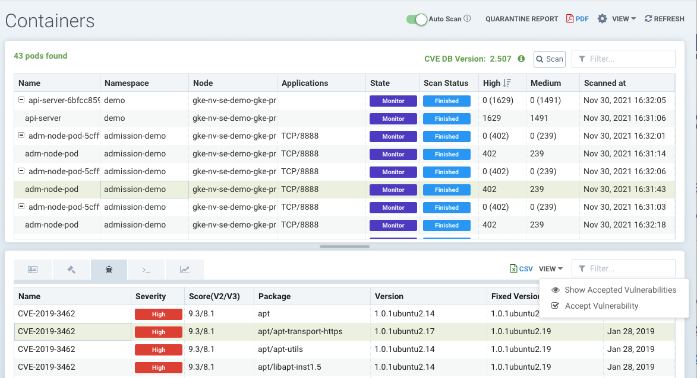

漏洞管理
使用 SUSE® Security 管理漏洞
SUSE® Security 使整个管道的漏洞扫描和管理自动化。在 SUSE® Security 中管理漏洞的最佳实践包括：
-
在 构建阶段 进行扫描，如果存在可修复的关键漏洞，则构建失败。这迫使开发人员在存储到注册表之前解决可修复的漏洞。
-
持续扫描暂存和生产注册表，以查找新发现的漏洞。可修复的漏洞可以要求立即修复，或者允许一个宽限期以提供修复时间。
-
配置 准入控制 规则，根据关键/高风险、可修复和报告日期等标准阻止生产中的部署。
-
持续扫描生产节点/主机、容器和编排平台，以查找新发现的漏洞。根据关键性/严重性实施响应，可以是 webhook 警报（联系安全和开发人员）、隔离容器或开始修复的宽限期。
-
确保运行中的容器处于监控或保护模式，并具有适当的白名单规则，以“虚拟修补”漏洞，防止在生产中被利用。
-
扫描无发行版和 PhotonOS 基础的镜像。
SUSE® Security 中的仪表板提供了一个风险评分摘要，其中包括漏洞，可用于降低漏洞风险。有关更多详细信息，请参见 如何提高风险评分。
用于审查、过滤和报告漏洞的另一个主要工具在安全风险菜单中。
安全风险菜单 - 漏洞
此菜单结合了来自注册表（镜像）、节点和容器漏洞扫描及资产菜单中发现的合规检查的结果，以实现端到端的漏洞管理和报告。
漏洞菜单提供了一个强大的探索工具，用于：
-
通过输入搜索字符串或使用框旁边的高级过滤器，使报告的查看或下载变得简单。高级过滤器允许用户按修复可用性（或不可用）、紧急程度、工作负载、服务、容器、节点或名称空间过滤漏洞.
-
通过点击影响行并查看修复和受影响的图像、节点或容器，了解漏洞和合规检查的影响。
-
查看任何漏洞或合规问题的保护状态（利用风险），以查看是否为受影响的节点或容器启用了SUSE® Security运行时安全保护（规则）。
-
在审核后，'接受’一个漏洞/CVE，以将其隐藏在视图中并从报告中抑制。

使用过滤框输入字符串匹配，或使用旁边的高级过滤器选择更具体的标准，如下所示。下载的 PDF 和 CSV 报告将仅显示过滤后的结果。

选择任何列出的 CVE 将提供有关该 CVE、修复以及哪些镜像、节点或容器受到影响的更多详细信息。保护状态图标（圆圈）显示各种颜色，以指示在运行时未受SUSE® Security保护的受影响项目的大致百分比，受SUSE® Security规则保护（在监控或保护模式下），或在运行时未受影响（例如，扫描到此漏洞的图像没有正在运行的容器）。保护状态列的颜色方案为：
-
黑色 = 未受影响
-
绿色 = 在监控或保护模式下由SUSE® Security保护
-
红色 = 未受SUSE® Security保护，仍处于发现模式
影响分析窗口（显示受影响的图像、节点、容器）的颜色方案为：
-
黑色 = 未受影响。在生产中没有使用此图像的容器。
-
紫色 = 在生产中以监控模式运行。
-
深绿色 = 在生产中以保护模式运行。
-
浅蓝色 = 在生产环境中以发现模式运行（未保护）
影响颜色旨在与SUSE® Security控制台中其他地方的发现、监控和保护模式的运行时保护颜色相对应。
接受漏洞
您可以“接受”一个漏洞（CVE），以将其排除在报告、视图、风险评分等之外。可以在多个屏幕上选择漏洞并点击接受按钮，例如安全风险→漏洞、资产→容器等。一旦接受，它将被添加到安全风险→控制文件列表中.可以在此处查看、导出和编辑。请注意，此接受功能可以限制为列出的映像和/或名称空间.也可以从此屏幕手动添加新条目到此列表。
要全局接受一个漏洞，请转到安全风险→漏洞页面，选择该漏洞，然后接受。这将为此CVE全局创建一个控制文件.

要接受在映像扫描中发现的漏洞，请在资产→注册表中打开映像扫描结果，拉下视图下拉菜单并选择接受。请注意，您还可以选择显示或隐藏此映像的已接受漏洞。注意：此操作将在此映像中为此CVE创建一个控制文件条目.

要接受在资产→容器中发现的漏洞，请选择该漏洞并拉下视图下拉菜单并选择接受。请注意，您还可以选择显示或隐藏此容器的已接受漏洞。注意：此操作将在此名称空间中为此CVE创建一个控制文件.

此操作也可以在资产 → 节点中执行，这将为所有容器、镜像和名称空间创建一个控制文件.
|
全球接受的漏洞在安全风险 → 漏洞视图和从此页面导出的报告中被排除。限于特定镜像或名称空间的接受漏洞将继续在视图中显示，但在高级过滤器将视图限制为这些镜像或名称空间的报告中将被排除。 |